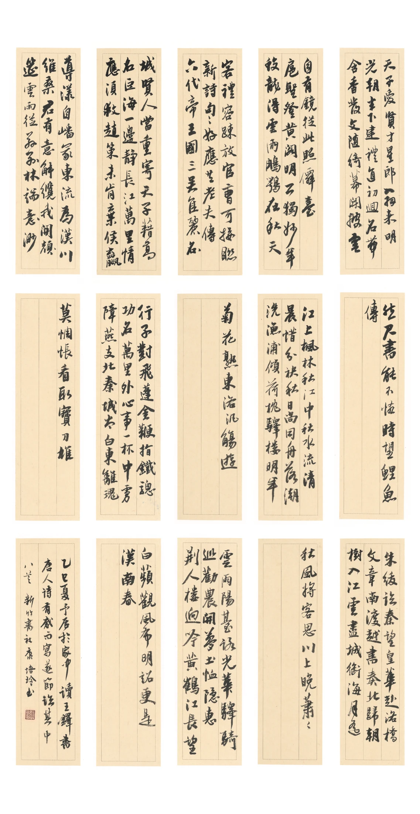

康培玲書法作品
展覽序言 / PREFACE
遠觀氣韻，近讀筆墨。
一幅作品，可以從遠處觀看章法，
也可以走近，細讀每一筆的起落。
在這裡，循著自己的步調，從全幅走入局部，
讓書寫的風景慢慢展開。
於筆墨之間....
作品展廳 / COLLECTION
紙上有境
循局部入展，從全幅細讀筆墨。
想像入室 / IN YOUR SPACE
讓筆墨，走進日常。
選一件作品，試一種裝裱，想像一處安放。

賞析選讀 / READING ROOM
觀書，也讀書。
讀
待續
書法賞析，陸續整理中。
這裡將收錄創作心得與賞析選讀，附作者、出處與原文連結。
關於我 / ABOUT
康培玲
筆墨・生活・雲展